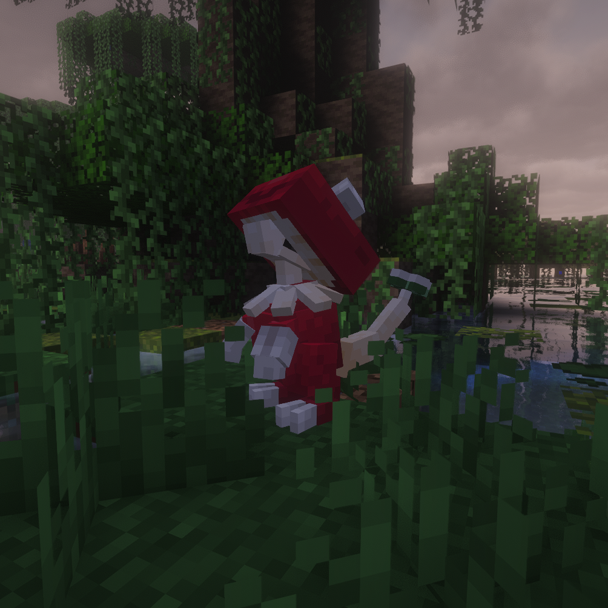
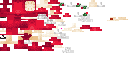
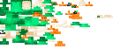

Blight Form
Blight Breloom
FightingPoison
BST 510

In-game screenshot
Base Stats
HP80
Attack125
Defense85
Sp. Atk55
Sp. Def75
Speed90
Ability
Rot Feeder
Restores a little HP whenever an opposing Pokémon takes poison damage.
Signature Move
Rot Punch
| Type | Category | Power | Accuracy | PP |
|---|---|---|---|---|
| Poison | Physical | 70 / 140 | 100% | 15 |
Power doubles to 140 if the target is poisoned or badly poisoned.
Level-Up Learnset
| Level | Move |
|---|---|
| 1 | Tackle |
| 1 | Absorb |
| 1 | Poison Powder |
| 1 | Stun Spore |
| 8 | Mach Punch |
| 12 | Leech Seed |
| 20 | Poison Jab |
| 26 | Drain Punch |
| 32 | Toxic |
| 38 | Seed Bomb |
| 44 | Rot Punch |
| 50 | Spore |
| 56 | Leech Life |
| 62 | Gunk Shot |
| 68 | Close Combat |
| 74 | Swords Dance |
| 80 | Focus Punch |
Additional Learnset
Other Learnset Categories
No additional Egg, TM, Tutor, or Legacy move entries are defined for this form in pack 1.10.
Natural Spawn
Rarity: Ultra Rare
Weight: 0.2
Level: 35-58
Context: Grounded
Biomes: Mushroom, Swamp
Sky light: 0–7
Textures

Normal texture sheet
Shiny texture sheet